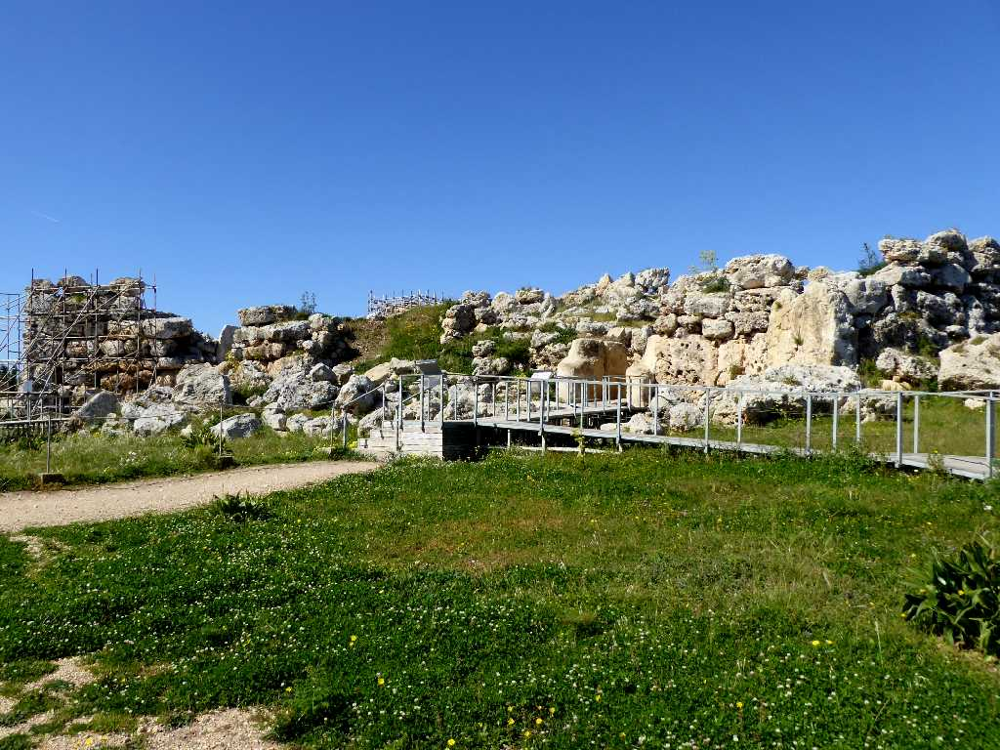
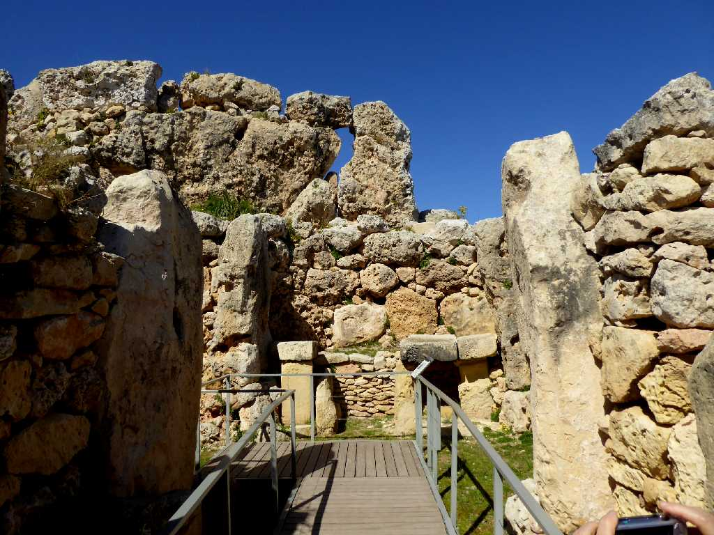
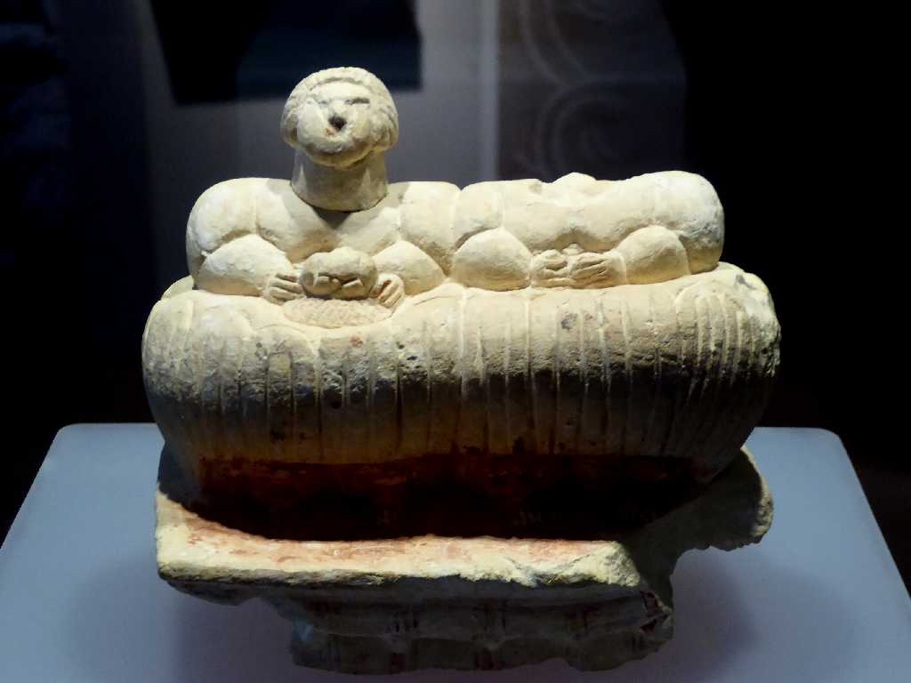
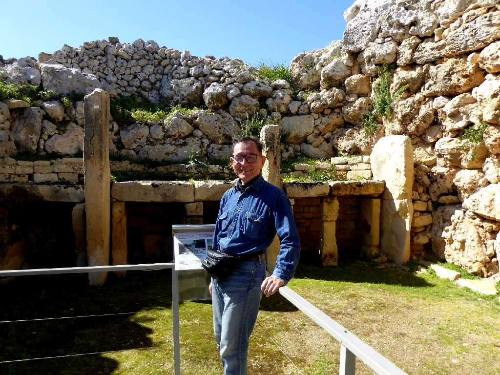

it-Tempji tal-Ġgantija Gozo
マルタのゴゾ島にあるマルタ巨石神殿群最古(紀元前３,６００年)のジュガンティーヤ神殿

Altar it-Tempji tal-Ġgantija

Stone sculpture it-Tempji tal-Ġgantija
５,５００年以上前の先史時代の巨石神殿から発見された二人の座る人物の彫像

March 5 2019 it-Tempji tal-Ġgantija Gozo